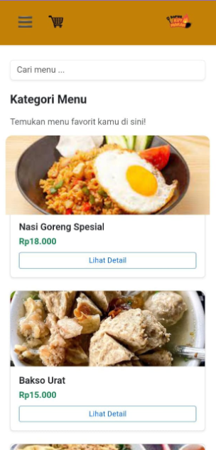
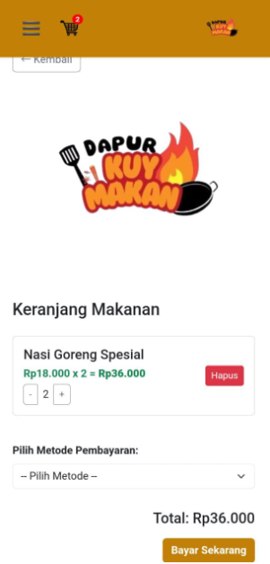
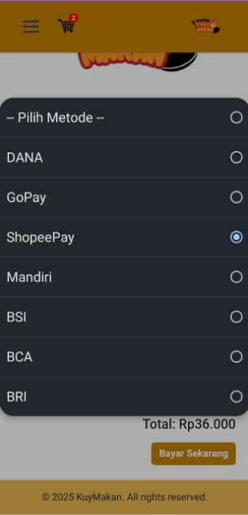
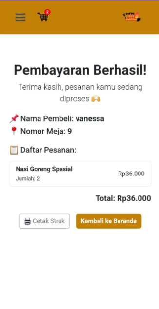
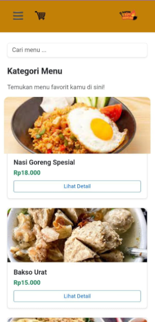
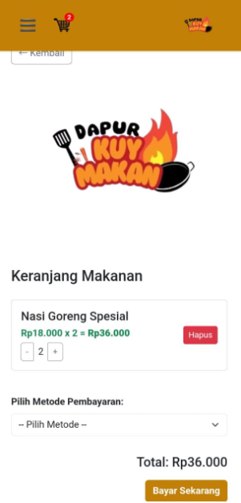
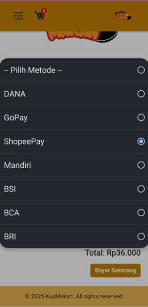
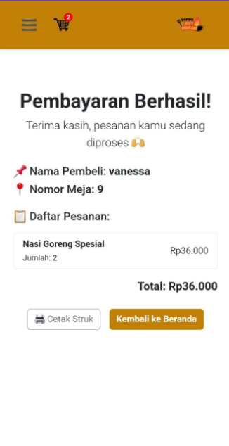
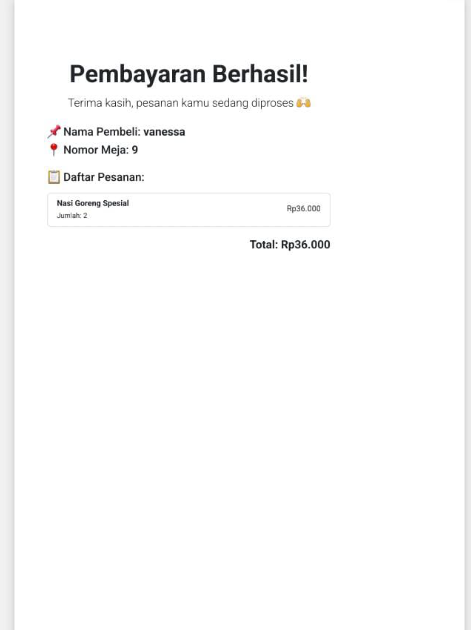
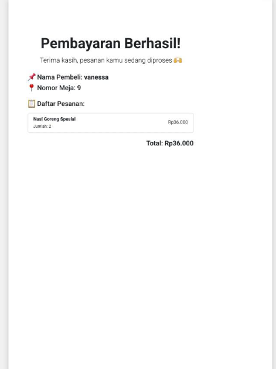

Aplikasi Website Kuy-Makan
 







 

Deskripsi Proyek
Kuy-Makan adalah aplikasi website yang memudahkan pengguna untuk mencari, menemukan, dan merekomendasikan makanan favorit secara online. Website ini dibangun menggunakan React.js dengan desain responsif dan interaktif sehingga nyaman diakses di berbagai perangkat.
Fitur Utama
- Pencarian makanan berdasarkan nama, kategori, atau lokasi
- Rekomendasi makanan populer dan terbaru
- Detail makanan lengkap dengan gambar dan deskripsi
- Desain UI modern dan user-friendly
- Responsif di desktop & mobile
Teknologi yang Digunakan
- React.js
- HTML5 & CSS3
- JavaScript ES6+
- Vercel (deployment)